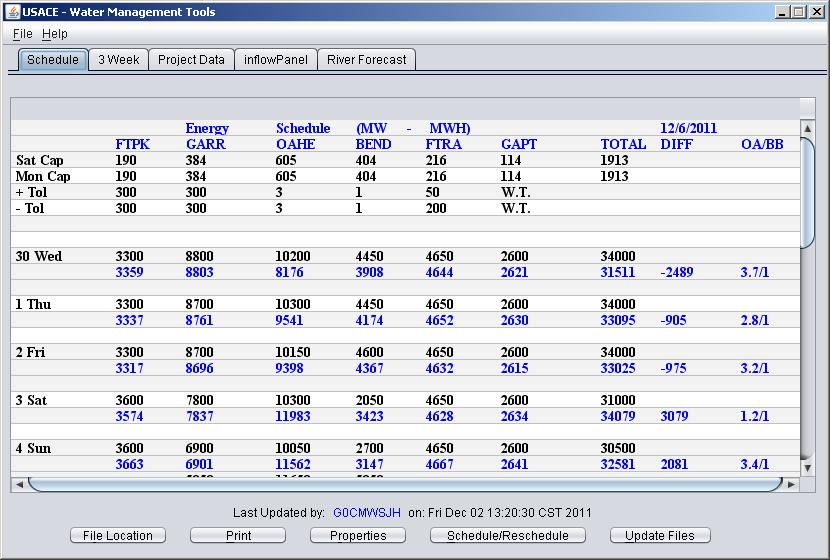
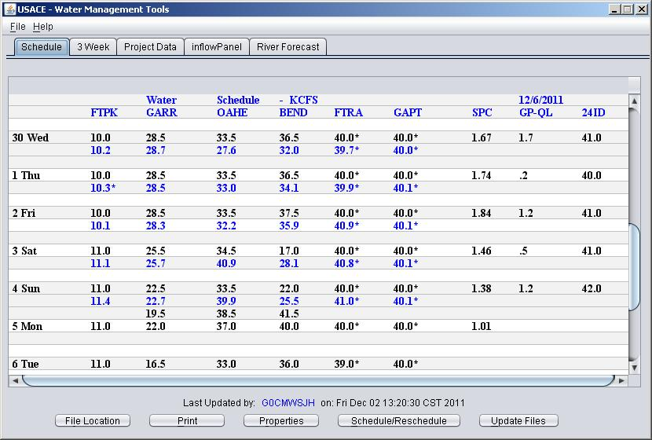
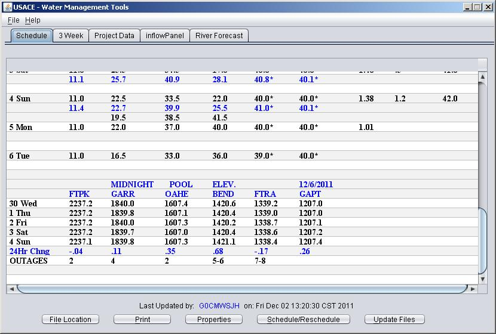
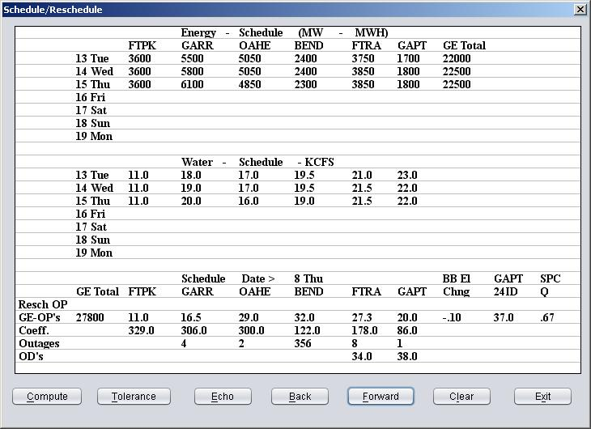
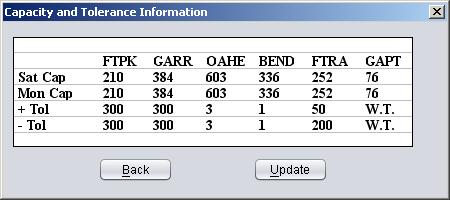

Schedule Program
Schedule Purpose:
The purpose of the schedule program is to regulate the water flow and calculate the energy generated out of the six mainstem reservoirs.
Schedule Assumptions:
The Schedule program assumes that there is a dlystat and schfile file in directory you are running the schedule program from.
The schedule program will not work without either of these files as they contain information needed for the program to work.
Schedule Program Functionality:
The Schedule program is started via a shortcut to an executable jar file.
The Schedule GUI is shown at startup.

The energy schedule is displayed first follwed by the water schedule and midnight pool elevations at the six mainstem reservoirs.


Main GUI Button Functionality:
File Location - Used to select the location of the dlystat and schfile.
Print - Loads the print services window and allows the schedule information to be printed.
Properties - Loads the properties window. Allows you to set the default schfile location and the one and two day flow percentages.
Schedule/Reschedule - Loads the Schedule/Reschedule windows to make scheduling changes.
Update Files - Writes out schedule updates and changes to the schfile. Saves all schedule updates or changes.
Schedule or Reschedule the current releases.
This option produces an input screen that shows seven days of energy schedule and seven days of water schedule. The days shown
include yesterday, today and five days for scheduling. Near the bottom of the input screen is an area for entering the values
needed for a single days scheduling. A date is shown in blue in the heading for the input screen.
Any number of units can be entered for outages but they have to be entered as a single number. For example, if units 3 and 5 are out
for one power plant the number 35 or 53 should be entered. Nothing should be entered if there are no outages.
The last data entry line is for total dam release (OD). Entries should be made on this line only if the OD's are larger than
the power plant release (OP). If OD's are entered they will show in the water schedule with an asterisk to flag them.
The line above the schedule line is the reschedule line. Re-schedule information should go on the reschedule line. Only plants
that are being rescheduled should be entered on the reschedule line. No entries should be made for Oahe and Big Bend on the
reschedule line. Values for total energy and the Big Bend pool change will be used if entered on the reschedule line,
otherwise the values from the schedule line will be used. After a compute is made following a reschedule only the recomputed
energy and discharge values appear in the upper portion of the screen under the ENERGY and WATER SCHEDULES positions.
The Compute button (Alt C) computes the energy values for all dams and discharge amounts for Oahe and Big Bend and places
the computed values under the Energy and Water Schedules on the screen. During the computation process the scheduled discharge
(OP) is compared to the "Summary of Engineering Data" discharges reduced by in proportion to the outages. A warning is issued
if the scheduled discharge is larger than this derived value so that power plant will not be scheduled for more release than
is possible. This warning is valid only if the reservoirs are at the elevations for which the "Summary of Engineering Data"
discharge computations were made. The relationships for maximum power plant discharge capacity versus pool elevations could
be installed in the program later if these relationships are developed making the warning more accurate.
The original scheduled values are saved and appear with the rescheduled values in a listing or on a printout. The schedule entry
values are "float" or decimal values. As many numbers as desired can be entered after the decimal point but the display format
is set and will not change despite the data entry. The total generation and outages are shown as integers. The OP's and OD's
have one decimal position and the Big Bend pool change has two decimal positions.

Schedule GUI Button Functionality:
Compute - Computes the Schedule Information for the specified day.
Tolerance - Loads the Capcity and Tolerance Information Window.
Echo - Copies the previous day schedule information into the current day
Back - Moves back to the previous day schedule information
Forward - Moves forward to the next day schedule information
Clear - Clears the current day schedule information
Exit - Closes the schedule reschedule window.
To Schedule releases, select the desired day with the forward and back buttons. The echo button will copy schedule information from the previous day to the current day.
The schedule information can be edited by selecting the desired cell. Once the schedule information is entered select the compute button to calculate the energy and water schedule information.
The Tolerance information can be edited by selecteing the Tolerance button on the Schedule/Reschedule gui.

Tolerance GUI Button Functionality:
Back - Closes the capacity and tolerance information window.
Update - Saves any changes made to the capacity and tolerance information.
The Saturday outages and the Saturday midnight pool elevations are used for the Saturday capabilities and the Monday
outages are used with the Saturday midnight pool elevations for the Monday capabilities. Both sets of these capabilities are
automatically computed on Monday and Tuesday mornings so this would only have to be done to correct an outage error. The
cursor can be moved to the desired location with the arrow keys or mouse for entry of the tolerance data. The update
button will save the changes. The back button closes the window.